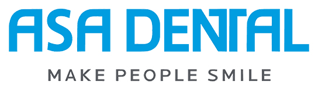
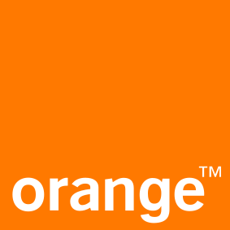
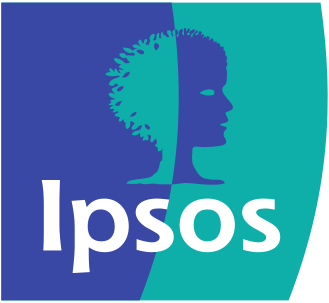

التشخيص التسويقي
قراءة مستقلة لما ينجح، وما يهدر المال، وما ينقص.
- مراجعة الاستراتيجية والفريق والقنوات والميزانية
- مكاسب سريعة مرتّبة حسب الأولوية
- خطة لتسعين يوماً تحتفظ بها
بوتيك استراتيجيات تسويق · الخليج والشرق الأوسط
بوتيك استراتيجيات تسويق للمؤسسين وفرق القيادة. نحدّد الاتجاه، ثم نبقى حتى يتحقّق على أرض الواقع.
علامات عملنا معها

لماذا بوتيك؟
تعمل مباشرة مع الاستراتيجي الرئيسي. لا مديري حسابات، ولا فريق مبتدئ.
نبقى حتى التنفيذ، ونتحمّل المسؤولية شهراً بعد شهر. لا عرضاً تقديمياً على الرف.
بالعربية والإنجليزية، وبفهم لخصوصية الخليج وبلاد الشام، حتى اللهجة في النص الإعلاني.
مع من نعمل
الخدمات
تُحجز كلٌّ منها على حدة. أنت تشتري خبرة ومسؤولية، لا ساعات.
قراءة مستقلة لما ينجح، وما يهدر المال، وما ينقص.
للإطلاقات، والأسواق الجديدة، أو خطة حقيقية للحضور الرقمي.
قائد تسويق خبير داخل شركتك، دون تعيين مدير تسويق تنفيذي بدوام كامل.
نموذج التشغيل الذي نعمل به، مُطبَّقاً داخل فريقك.
كيف نعمل
نحدّد ما ينجح وما يهدر المال.
نضع الاستراتيجية والأولويات والنطاق.
نقود التنفيذ ونتحمّل مسؤولية النتيجة.
يغطي كل تشخيص
نماذج من تقارير سابقة، مع إخفاء البيانات، متاحة بموجب اتفاقية عدم إفصاح.
كيف نفكّر
الخطة نادراً ما تكون المشكلة. المشكلة في غياب من يتحمّل مسؤوليتها.
أعمال مختارة
روضة نصف ممتلئة، مُلئت بالكامل في حملة واحدة.
ارتفعت مقاعد الروضة من 61 إلى 120، وانخفضت كلفة الاستفسار إلى نحو الثلث.
هوية ومحتوى وإعلانات بُنيت من الصفر لطبيب مسالك بولية وجمهوره السوري.
53.2K متابع على إنستغرام من الصفر، بحساب موثّق.
توليّنا دور مدير التسويق: الهوية والاستراتيجية والموقع والفريق، قبل يوم الافتتاح.
توليّنا دور مدير التسويق من الهوية حتى الافتتاح. قدنا تطوير العلامة وتموضعها، ووضعنا استراتيجية التسويق ودخول السوق للمدارس والشركات والجمهور، وطوّرنا الموقع الإلكتروني، وأدرنا فريق التسويق والإبداع. وتحوّلت عبارة "جرّب. تواصل. انتمِ." إلى منظومة الرسائل خلف نظام إدارة العملاء وحملة الإطلاق وتقويم المحتوى.
عن نورد نوفا

يقود نورد نوفا نزار أبو أحمد، المؤسس وكبير الاستراتيجيين. 18 عاماً في إدارة التسويق داخل الشركات متعددة الجنسيات والشركات الناشئة والأعمال النامية في المنطقة.
خبرة قبل نورد نوفا


كيف يعمل البوتيك
تواصل معنا
يردّ الاستراتيجي الرئيسي خلال يوم عمل واحد، بإجابة صريحة عمّا إذا كنّا الخيار المناسب لك.